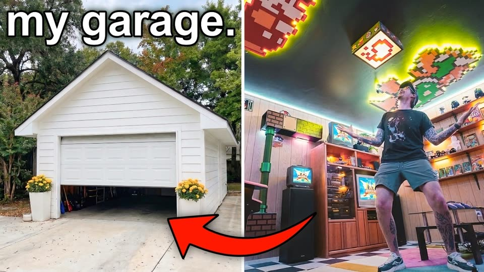

Jonny Builds · upload of 29 Aug 2026 · analysed 2 to 3 Sep 2026 · private, for the Influint team
The Man Cave Repackage
The video holds people better than anything he has shipped this year and the curve confirms it end to end. The click is normal, the reach is thin, and the only weak twenty seconds are the ones where people who clicked for a man cave discovered a build. That is a packaging problem with a specific shape, and it has a fix you can start today.
110k to 165k a day and still being served; the Table of My Dreams averaged about 189k a day over its 28-day window with a front-loaded push.
4.05%
Click-through to date
Channel norm. His recent uploads run 3.3% to 6.6% (median about 4.4%); day 2 peaked at 4.94%.
46.3%
Still watching at halfway
Beats 33 of his last 40 analysed uploads (channel median 36.2%). Average view percentage 43.0% to date, the best of his last eight.
90.7%
Present at the first sample
His uploads typically keep 95.8%. Five points of immediate bounce, and the only place Studio's comparable-video series reads negative. The package, not the edit.
01 · Diagnosis
Distribution, not the click, and not the watch
YouTube widens a video's audience when the first people it shows it to click at the rate it expected and then watch. Both are fine here. Six days in, the video has been shown 558k times; the Table of My Dreams was shown 5.3M times across its 28-day window, which is about 189k a day on average with a front-loaded push, while this one has run at 110k to 165k a day and is still being served. The click is normal and the watch is his best. When both of those hold and the reach does not, the thing to look at is who the package speaks to.
Three quarters of his 90-day audience are people who have never watched him before (381,612 new viewers against 129,727 returning; only 21,398 regulars in 607,958 uniques). His growth comes from strangers in the browse feed, so a package has to work for someone with no idea who he is. “my garage” and “man cave” are fan framing: they assume you care whose garage it is, and they describe a category rather than an event.
The one watch-side symptom of that fit problem is at the very first sample of the retention curve: five points more immediate bounce than his norm, and a -20.9% reading against comparable videos there. People who clicked on a “man cave in my garage” saw a build-vlog opening and left; everyone who stayed past twenty seconds behaved like his best audience.
What the video actually promises (from the edit) A secret room behind a three-level puzzle door hidden in a normal garage cabinet. A surprise home gym for his wife, revealed to her on camera. A 90s arcade and TV room built around the idea that streaming took physical media away.
What the package says Title: a hidden man cave in a garage. Thumbnail: a white garage exterior (half the frame) and a busy shot of him in the finished room. No door, no puzzle, no wife, no before.
Day
Views
Impressions
CTR
2026-08-29
12,572
109,112
3.76%
2026-08-30
27,253
164,614
4.94%
2026-08-31
15,979
146,927
3.49%
2026-09-01
2,362
17,500
4.07%
2026-09-02
14,187
120,274
3.77%
Studio, per day, pulled 3 Sep. The 1 Sep row was still filling in when pulled. Totals to date: 72,353 views on 558,427 impressions (4.05%), 43.0% average view percentage, 13:33 average view duration, +148 subscribers.

The current thumbnail. The left half spends 50% of the frame on a pristine white building that reads as a real-estate listing; the right half has eleven objects competing at 120px wide. Warning 789bf7d1054c in the knowledge base: overcrowded thumbnails come from spending time in Photoshop instead of thinking about the shot.
Upload
28d views
Impr.
CTR
APV
Man Cave (to day 6)
72,353
558k
4.05%
43.0%
Table of My Dreams
271,145
5.29M
3.31%
31.4%
Robot vs. Man
105,025
1.29M
4.95%
38.9%
$12,000 Mistake
95,419
1.25M
4.60%
40.9%
I Could Get Sued
188,907
2.31M
4.79%
37.6%
9024 Sheets of Paper
136,677
2.18M
3.72%
45.9%
Dream Bed for $250
120,774
1.57M
4.43%
38.5%
5 MORE Impossible
292,816
4.66M
3.68%
36.6%
The other rows are full 28-day windows from the Studio pull of 31 Aug; the Man Cave row is six days old, so compare its rates, not its totals. Its score in the store stays “unknown” until day 28 by rule.
02 · Retention, measured
The curve says the edit is fine; the first twenty seconds say the package is not
Source: Studio's own retention series (AUDIENCE_WATCH_RELATIVE) pulled from the signed-in Studio session on 3 Sep, because the public Analytics API still refuses the channel. Percent axis, so the shapes line up; the dashed line is the median of his 40 most recent analysed uploads at each point.
Checkpoint
This video
Channel
Read
First sample
90.7%
95.8%
38 of 40 recent uploads held more. Five points of immediate bounce above his norm; Studio's comparable-video series reads -20.9% here and -5.2% at the next sample, then positive for the rest of the video.
0:19
74.3%
75.9%
25 of 40 held more. Ordinary.
0:38
62.8%
62.3%
18 of 40 held more. Exactly typical: once the bounce is past, the opening minute is the channel's normal opening minute.
0:57
57.7%
54.4%
Better than typical.
Halfway (15:44)
46.3%
36.2%
Beats 33 of 40. The flattest middle he has shipped in the stored record: 55.6% at 1:35 to 44.4% at 25:30, eleven points over twenty-four minutes.
Sponsor read 15:47 to 16:13
46.3% to 46.1%
11.6% bleed depth is his median read
A 0.2-point loss. The read placed while the door was hung but untested cost nothing; the channel's usual read loses a tenth of the room.
18:48 to 26:38
45.9% to 44.4%
1.5 points over eight minutes. No sag; the hypothesis from the edit was wrong and the curve says so.
Reveals 27:23 to 29:55
47.3% to 48.2%
Higher than the ten minutes before them: viewers scrub back to the gym reveal, the puzzle door and the room. The 24:15 spike (47.7%) is the mosaic going up.
Last sample
37.7%
29.8%
The outro bleed is the final sixty seconds after the room reveal, and it is smaller than his usual end.
Three hypotheses were written from the edit before the curve existed: that the sponsor read at 15:47 would show the channel's usual bleed, that the eight minutes of cat wall and mosaic assembly would sag, and that the late reveal would hold. The curve settles them: the read cost 0.2 points, the stretch cost 1.5 points over eight minutes, and the reveal block runs higher than the ten minutes before it. There is nothing to re-cut. Law 78c39cd4325b (a back-half problem is a setup problem, not a length problem) does not even apply, because there is no back-half problem.
What the curve does show is at the start. Ninety-one percent are present at the first sample where his uploads typically keep ninety-six; Studio's comparable-video series is negative only for those first two samples. That is the signature of viewers who clicked for one thing and saw another, which is the packaging-fit diagnosis from the numbers side. It is small (five points) and it is the only weakness in a 31-minute curve that beats 33 of his last 40 uploads at the halfway mark.
Flagged moments (per-moment analysis, transcript-verified where a quote is shown)
At
Kind
What and why
Move
0:00
drop
Opening sheds the usual chunk of arrivals through the first 15 seconds (*8.96% stop rate, 3,661 viewers, landing at 90.7%*). The hook lists the whole build up front: "transforming my weird garage into the hidden room" plus the gym surprise and puzzle door. Transcript: “hidden room of my dreams”
Test: cut 0:12-0:28 planning voiceover and jump from "hidden room of my dreams" straight to the first framing shot. Caution: This removes 16 seconds; verify nothing later in the video depends on what is cut (a setup, a sponsor read, a disclosure). This stop rate is 0.9x the channel's own norm at this position, i.e. typical for the channel; it is a standing habit rather than this video's defect, so trial the change before committing to it.
8:11
drop
A 19-second lull loses more viewers than the surrounding footage predicts (*13.5x spike, 881 viewers, 51.3% to 49.1%*). A silent music-only build cut runs from 8:00 to 8:14 before he resumes talking about "the coolest parents that just let us watch all the R-rated movies." Transcript: “coolest parents that just let us”
Cut the 8:05-8:14 music-only interlude and open the man-cave planning beat directly on "picture the wood paneling."
24:15
drop
A sharp exit at the sponsor tag-out costs almost 2.2 points at the 78% mark (*21.2x spike, 865 viewers, 47.7% to 45.6%*). The Greenhinge segment resolves and hands off with "Thanks again to Greenhinge for sponsoring this video" right before ceiling-mosaic assembly. Transcript: “Thanks again to Greenhinge for sponsoring”
Move the "Thanks again to Greenhinge" tag-out earlier into the noise-test tease at 24:01 so the payoff "Oh, it's so much more quiet" lands last. Caution: Verify Greenhinge's contract allows the disclosure to sit before the on-camera result; if not, keep placement and shorten the tag to two seconds.
24:15
peak
Viewers scrub back onto the noise-test reveal, lifting the curve at the 77% mark (*+6.2% of audience present, 1,210 viewers regained*). The hinge upgrade's before-and-after lands audibly: "That's crazy. Oh, it's so much more quiet. Wow." Transcript: “so much more quiet”
Front-load a five-second version of this quiet-vs-loud comparison in the intro montage before 0:20 to preview the payoff.
27:23
peak
Audience climbs and holds for nine samples as the finished room is dressed (*+2.8%, 562 viewers regained, sustained to 47.3%*). he teases the aesthetic reveal without spoiling: "little arcade sign, a lava lamp, some movie posters" and the Jurassic Park callout. Transcript: “arcade sign, a lava lamp”
Cut a 6-second static-to-decorated dissolve of the same wall between 27:14 and 27:33 and hold each prop on screen one full beat.
27:42
peak
A short second peak lands on Katie's gym reveal (*+1.9%, 389 viewers regained, audience at 48.2%*). Her live reaction carries it: "Oh my gosh. Oh my god. Look at the light. So cool." Transcript: “Look at the light”
Hold Katie's reaction shot from 27:46 to 27:56 uncut instead of cutting away, and delay the puzzle-door tease until after "This is awesome."
Evidence type: this video's measured curve against the channel's own stored curves (channel-relative observation). The comparable-video series is YouTube's, not ours.
03 · The angles
Twenty-five packaging angles, ranked by the evidence behind them
Each angle is a title with a thumbnail direction. The mocks are composites: three scene plates were generated with Krea 2 (the anonymous run quota closed after three; the prompt pack for the other eleven is at the end), the rest use real frames from his own thumbnails. “Shoot” boxes mark a frame that exists in the edit and needs to be pulled at full resolution. Every “why” cites the channel's own numbers, a claim in the intelligence store by id (with its standing and measurement), or the recommendation rail on the watch page.
Do this first. Change the title to A1 (or B1 if the Katie frame can be pulled today), then open Test & compare in Studio and run three thumbnails against it for at least a week: A1 (cabinet open onto the arcade), A3 (“THIS IS A CABINET.”), B1 (Katie at the door). YouTube declares the winner on watch-time share, which is the right criterion for a video that already holds this well.
Secret door His three biggest non-table hits are doors and secret rooms.
His door and secret-room videos, lifetime viewsObserved
Lifetime views as YouTube shows them; the man-cave bar is six days old (hollow). Log scale, because the folding door is a hundred times the median.
The same videos, age-adjusted first-28-day scoreObserved
Secret Room (2021) reads 0.98x on this basis: its 1.67M lifetime views came after the window, so the lifetime bar overstates what the package did on day one. The folding door is the outlier either way.
SECRET ARCADE
AI plate
Krea 2 plate. Every mock is a composite for direction, not a finished asset.
A1
I Hid a Secret Arcade Inside a Garage Cabinet
Secret doorStrongest evidence
Why it should work
The three biggest non-table hits in 140 uploads are all doors and secret rooms: Impossible Folding Door (7.8M views, 222x the channel's median at the time), Secret Room (1.67M) and The Door of the Future (320k). This video contains a secret door and the current package never says so.
Law df126d83e8ed: install something everyone understands (an arcade) in an unused domestic crevice and the format inherits the secret-room appeal. Signed law, human-reviewed.
Warning 693b8db93f38: state exactly what happened. "Hid", "secret arcade", "garage cabinet" are the three literal facts of the build; "man cave" is a category.
His door and secret-room videos, lifetime viewsObserved
Lifetime views as YouTube shows them; the man-cave bar is six days old (hollow). Log scale, because the folding door is a hundred times the median.
law · signed, not measured df126d83e8edwarning · not measured 693b8db93f38
Watch out
The plate must show enough arcade to promise more than a door; a door alone reads as a build tutorial.
NORMAL CABINET?
AI plate
Krea 2 plate. Every mock is a composite for direction, not a finished asset.
A2
The Secret Door Is a Normal Garage Cabinet
Secret doorStrongest evidence
Why it should work
Law 5f7da5d4578d (familiar + mysterious): a question about an object the viewer already has a relationship with needs no new interest built. Everyone knows a garage cabinet; the light in the gap is the mystery.
Warning 171390bd2f12 (subject must differ from background): a dark sliver of neon on a pale cabinet is legible at scroll size, where the current thumbnail's busy right half is not.
It is the exact beat the video builds towards: 6:05 "the most inconspicuous simple garage cabinet you've ever seen".
His door and secret-room videos, lifetime viewsObserved
Lifetime views as YouTube shows them; the man-cave bar is six days old (hollow). Log scale, because the folding door is a hundred times the median.
law · signed, not measured 5f7da5d4578dwarning · not measured 171390bd2f12
Watch out
Quieter than his usual frame; the sliver of light must read at 120px wide, so keep the cabinet large and the gap bright.
FIND IT
AI plate
Krea 2 plate (stand-in for the gym-wide plate in the prompt pack). Every mock is a composite for direction, not a finished asset.
A4
Can You Find My Secret Room?
Secret doorGood evidence
Why it should work
The video's spine is a three-level puzzle; a challenge title invites the viewer to play it, which is the structure that made Secret Room (1.67M) work for strangers.
75% of his 90-day audience are new viewers (381,612 new against 129,727 returning; regulars are 3.5% of uniques). A package has to work for someone who has never heard of him, and a hidden-room search does; "my garage" does not.
His door and secret-room videos, lifetime viewsObserved
Lifetime views as YouTube shows them; the man-cave bar is six days old (hollow). Log scale, because the folding door is a hundred times the median.
Who watched in the last 90 daysObserved
Studio, 90-day window. A package has to work for someone who has never heard of him.
warning · not measured e41c5dcefb71
Watch out
Phrased as "Nobody can find" it overclaims (warning e41c5dcefb71: implausible claims depress clicks). The question form stays credible.
Wife's verdict “She Asked Me To Build” is the channel's strongest format (3.72x).
“She Asked Me To Build ___”: every video in the shapeObserved
Outlier score = first-28-day views against the median of the uploads nearest in time. 6 videos in the shape; median 3.72x.
SHOOT Katie at the cabinet (28:12)
SHE HAS TO SOLVE IT
AI plate
Krea 2 plate. Every mock is a composite for direction, not a finished asset.
B1
She Has to Solve a Puzzle Door to Get In
Wife's verdictStrongest evidence
Why it should work
"She Asked Me To Build ___" is the channel's strongest format: median 3.72x over 6 videos, with 5.6x ("Her Reaction Is PRICELESS") and 5.17x at the top. The man-cave video is that format in disguise: a surprise for Katie, revealed to her on camera.
Claim 19a509fd7031: adding an emotional promise with a third-party verdict raised both retention and views against the same creator's identical format, with the curve spiking at the reveal. The reveal here runs 27:38 to 29:02.
The current title mentions neither Katie nor the test, so the format's audience never sees it.
“She Asked Me To Build ___”: every video in the shapeObserved
Outlier score = first-28-day views against the median of the uploads nearest in time. 6 videos in the shape; median 3.72x.
theory · not measured 19a509fd7031
Watch out
Needs a real frame of Katie at the cabinet (28:12 in the edit, or a re-shoot); the seek-preview frames are 160px and cannot be used.
SHOOT Katie's reaction (27:45)
SHE FOUND IT
AI plate
Krea 2 plate (stand-in; the from-inside plate is in the prompt pack). Every mock is a composite for direction, not a finished asset.
B2
I Built a Secret Room and Made My Wife Find It
Wife's verdictStrongest evidence
Why it should work
Same evidence as B1 with the secret-room noun leading, so it also reaches the door audience (A1).
States the whole event in one sentence (warning 693b8db93f38).
“She Asked Me To Build ___”: every video in the shapeObserved
Outlier score = first-28-day views against the median of the uploads nearest in time. 6 videos in the shape; median 3.72x.
warning · not measured 693b8db93f38
Watch out
Two promises in one title; keep the thumbnail on one of them (her reaction), not both.
HER GYM
MY SECRET
Real + AI
Krea 2 plate (gym side) beside a real frame of his room (from the current thumbnail). Every mock is a composite for direction, not a finished asset.
B3
I Hid an Arcade Behind My Wife's Gym
Wife's verdictGood evidence
Why it should work
The split is the literal plan (0:11: "split my garage in half") and gives the frame two subjects with opposite lighting, which reads at scroll size.
The surprise-while-away structure (description: built while Katie was out of town) supplies stakes without inventing any.
“She Asked Me To Build ___”: every video in the shapeObserved
Outlier score = first-28-day views against the median of the uploads nearest in time. 6 videos in the shape; median 3.72x.
Who watched in the last 90 daysObserved
Studio, 90-day window. A package has to work for someone who has never heard of him.
Watch out
Avoid the tired husband-versus-wife framing; it is a surprise for her, and the copy should say so.
SHOOT Reaction frame (27:45-29:02)
SHE FOUND IT
AI plate
Krea 2 plate (stand-in; the from-inside plate is in the prompt pack). Every mock is a composite for direction, not a finished asset.
B4
She Found My Secret Room. Here's Her Reaction.
Wife's verdictGood evidence
Why it should work
The 5.6x precedent on this channel is a reaction title. The reaction exists in the edit, so this is packaging what was shot, not a new promise.
“She Asked Me To Build ___”: every video in the shapeObserved
Outlier score = first-28-day views against the median of the uploads nearest in time. 6 videos in the shape; median 3.72x.
Watch out
"PRICELESS"-style phrasing is the vague-curiosity language the ledger's warning says no longer pays; the plain sentence above keeps the fact and drops the hype.
WHILE SHE WAS AWAY
Real frame
Real frame: the finished room, from the current thumbnail. Every mock is a composite for direction, not a finished asset.
B5
We Built a Secret Arcade While My Wife Was Away
Wife's verdictGood evidence
Why it should work
Time-boxed surprise is built-in conflict, which warning e6f8cd5679d9 says an idea needs to hold viewers at all; the description already frames the build this way.
“She Asked Me To Build ___”: every video in the shapeObserved
Outlier score = first-28-day views against the median of the uploads nearest in time. 6 videos in the shape; median 3.72x.
warning · not measured e6f8cd5679d9
Watch out
Do not attach a day count unless it is real; the edit never states one.
Object first His best click-through came from a deadpan object frame.
First-28-day click-through, his recent uploadsObserved
Studio pull of 31 Aug (first-28-day CTR). The man-cave figure is its day-2 reading. “This is a chair” (the illusion chairs) is the highlighted bar.
Fleet record: shorter titles go with higher first-28-day CTRConsistent
Every trusted reading in the ledger, all channels.
Title length against first-28-day CTR, this channelCorrelation
Spearman rank correlation over every upload with a first-28-day CTR. The fleet claim (shorter titles, higher CTR) is drawn separately as its ledger record; this is the channel's own version of it. The green dot is the man-cave title (10 words).
THIS IS A CABINET.
AI plate
Krea 2 plate (closed-cabinet stand-in; the plain-front plate is in the prompt pack). Every mock is a composite for direction, not a finished asset.
A3
This Cabinet Hides a 90s Arcade
Object firstStrongest evidence
Why it should work
His best click-through in two years came from the deadpan object frame: "This is a chair" on a man sitting on air (6.57% CTR against a channel median near 4.4%). Same audience, same joke, one line.
The title carries the second beat the thumbnail withholds (the arcade), so curiosity has a stated payoff: warning 8edb23a48ade says curiosity without importance clicks but does not satisfy.
Shorter titles go with higher 28-day CTR in the ledger (held on 23 of 45 readings, 18 channels; the discovery run found it consistent across 9 channels).
First-28-day click-through, his recent uploadsObserved
Studio pull of 31 Aug (first-28-day CTR). The man-cave figure is its day-2 reading. “This is a chair” (the illusion chairs) is the highlighted bar.
warning · not measured 8edb23a48ade
Watch out
Relies on tone. If the cabinet plate is too plain the frame reads as a furniture ad; keep the gym floor and one weight in frame for scale.
HAS A SECRET
Real frame
Real frame: the garage exterior, from the current thumbnail. Every mock is a composite for direction, not a finished asset.
C1
My Garage Has a Secret
Object firstGood evidence
Why it should work
Five words. Shorter titles go with higher 28-day CTR across the fleet (23 of 45 readings held, 18 channels).
Uses the exterior shot the current thumbnail already spends half its frame on, but with the mystery stated instead of "my garage."
First-28-day click-through, his recent uploadsObserved
Studio pull of 31 Aug (first-28-day CTR). The man-cave figure is its day-2 reading. “This is a chair” (the illusion chairs) is the highlighted bar.
Title length against first-28-day CTR, this channelCorrelation
Spearman rank correlation over every upload with a first-28-day CTR. The fleet claim (shorter titles, higher CTR) is drawn separately as its ledger record; this is the channel's own version of it. The green dot is the man-cave title (10 words).
Watch out
Says nothing about the arcade, so it rests on curiosity alone; the payoff is strong enough, but pair it with a thumbnail that shows the glow.
SECRET ROOM
AI plate
Krea 2 plate (stand-in for the gym-wide plate in the prompt pack). Every mock is a composite for direction, not a finished asset.
C2
There's a Secret Room in This Gym
Object firstGood evidence
Why it should work
The gym is the familiar object, the room is the mystery (law 5f7da5d4578d), and Secret Room (1.67M) is the precedent on this exact channel.
First-28-day click-through, his recent uploadsObserved
Studio pull of 31 Aug (first-28-day CTR). The man-cave figure is its day-2 reading. “This is a chair” (the illusion chairs) is the highlighted bar.
law · signed, not measured 5f7da5d4578d
Watch out
The gym has to look finished and ordinary for the arrow to mean anything.
FAKE
AI plate
Krea 2 plate. Every mock is a composite for direction, not a finished asset.
C3
Hidden Arcade Behind a Fake Cabinet
Object firstGood evidence
Why it should work
"Fake" is the one-word version of familiar + mysterious, and the plate shows the payoff in the same frame.
First-28-day click-through, his recent uploadsObserved
Studio pull of 31 Aug (first-28-day CTR). The man-cave figure is its day-2 reading. “This is a chair” (the illusion chairs) is the highlighted bar.
Watch out
Near-duplicate of A1; test one of them, not both.
Transformation What the recommendation rail already thinks this video is.
Room transformations on this video's watch-page railObserved
Other channels' lifetime views as displayed on the rail on 2 Sep; not age-adjusted, and their audiences differ. It shows what the recommendation system pairs this video with, nothing more.
Fleet record: a near-duplicate of a proven format beats a wholly new oneConsistent
Read in maker-build only, because the claim is scoped to that niche.
USELESS
Real frame
Real frame: the finished room, from the current thumbnail. Every mock is a composite for direction, not a finished asset.
E1
Turning a Useless Garage Into a Secret Arcade
TransformationStrongest evidence
Why it should work
The recommendation system is already telling us what it thinks this video is: the watch page pairs it with Foureyes' "I Turned My Garage Into The Nicest Room In My House" (1.4M) and DualEx's "I Transformed My Creepy Old Basement Into a Secret Dream Game Room" (871K). Law 9e642184ef76: independent examples sharing one promise are evidence of a repeatable expectation.
The current thumbnail attempts a before-and-after but the "before" is a pretty white garage exterior; the video's own before (1:22 to 1:55) is a junk-filled space you cannot park in, which is the frame that earns the arrow.
Room transformations on this video's watch-page railObserved
Other channels' lifetime views as displayed on the rail on 2 Sep; not age-adjusted, and their audiences differ. It shows what the recommendation system pairs this video with, nothing more.
law · signed, not measured 9e642184ef76
Watch out
The before must look genuinely bad or the transformation reads as decoration.
BEST ROOM IN THE HOUSE
Real frame
Real frame: the finished room, from the current thumbnail. Every mock is a composite for direction, not a finished asset.
E2
I Turned My Garage Into the Best Room in My House
TransformationGood evidence
Why it should work
Candidate law 30b319487492 (measured, held on 21 of 28 readings across 8 maker-build channels): a near-duplicate of a proven format beats a wholly new one. Foureyes' 1.4M title is the proven format; this is the 90/10 version of it.
Room transformations on this video's watch-page railObserved
Other channels' lifetime views as displayed on the rail on 2 Sep; not age-adjusted, and their audiences differ. It shows what the recommendation system pairs this video with, nothing more.
Fleet record: near-duplicate of a proven formatConsistent
Read in maker-build only, because the claim is scoped to that niche.
candidate-law · held 21 of 28 on 8 ch, in maker-build 30b319487492
Watch out
It is nearly Foureyes' exact title. Use the structure, not the words; the arcade or the secret must be the 10% twist.
BEFORE
Real frame
Real frame: the garage exterior (the junk-filled interior at 1:22 is the shot to use). Every mock is a composite for direction, not a finished asset.
E3
My Garage Was Useless. So I Hid an Arcade in It.
TransformationGood evidence
Why it should work
Two plain sentences that state cause and result (warning 693b8db93f38), with the transformation and the secret in one title.
Room transformations on this video's watch-page railObserved
Other channels' lifetime views as displayed on the rail on 2 Sep; not age-adjusted, and their audiences differ. It shows what the recommendation system pairs this video with, nothing more.
warning · not measured 693b8db93f38
Watch out
Long for a mobile title card; the first clause is what survives truncation, so it must carry the hook.
90s nostalgia The audience the room was built for.
90s-tech videos on this video's watch-page railObserved
Other channels' lifetime views on the rail on 2 Sep; a reachability signal, not a benchmark.
Who watched in the last 90 daysObserved
Studio, 90-day window. A package has to work for someone who has never heard of him.
STREAMING CAN'T DELETE THIS
Real frame
Real frame: the finished room (the VHS-wall plate is in the prompt pack). Every mock is a composite for direction, not a finished asset.
D1
I Built the Room Streaming Killed
90s nostalgiaGood evidence
Why it should work
It is the video's own thesis: 0:44 to 0:56, physical media and owning what you love. A point of view is a reason to click that a room description is not.
YouTube already pairs this upload with 90s-tech content on the watch page (Corridor Crew, "Can Modern VFX Artists use 90s Software?", 1.6M), which is a live signal that the nostalgia audience is reachable from here.
90s-tech videos on this video's watch-page railObserved
Other channels' lifetime views on the rail on 2 Sep; a reachability signal, not a benchmark.
Who watched in the last 90 daysObserved
Studio, 90-day window. A package has to work for someone who has never heard of him.
Watch out
Pulls a different audience than woodworking; expect lower CTR among subscribers and more reach. That trade is the point for a discovery-driven channel, but watch the first 48 hours.
1995
Real frame
Real frame: the finished room (the 1995 living-room plate is in the prompt pack). Every mock is a composite for direction, not a finished asset.
D2
I Turned My Garage Into 1995
90s nostalgiaGood evidence
Why it should work
A year is more specific than a decade (warning 693b8db93f38), and it turns the room into a time capsule, which is a stronger promise than a themed room.
90s-tech videos on this video's watch-page railObserved
Other channels' lifetime views on the rail on 2 Sep; a reachability signal, not a benchmark.
warning · not measured 693b8db93f38
Watch out
The build is more arcade than living room; the thumbnail should show the CRT-and-couch side (16:13 to 18:48 footage), not the mosaic.
90s KIDS
Real frame
Real frame: the Mario mosaics on the ceiling, from the current thumbnail. Every mock is a composite for direction, not a finished asset.
D3
Every 90s Kid Needs This Room
90s nostalgiaReasoned, weaker evidence
Why it should work
Identity call-out to the viewer the room was built for, on the most photogenic unique element (the 3D-printed Super Mario 3 mosaics, backlit).
90s-tech videos on this video's watch-page railObserved
Other channels' lifetime views on the rail on 2 Sep; a reachability signal, not a benchmark.
warning · not measured e6f8cd5679d9
Watch out
"Needs this" is soft; there is no question or conflict in it (warning e6f8cd5679d9). Better as thumbnail text under a secret-room title than as the title itself.
SECRET ARCADE
Real frame
Real frame: the finished room, from the current thumbnail. Every mock is a composite for direction, not a finished asset.
D4
I Built a Secret 90s Arcade in My Garage
90s nostalgiaGood evidence
Why it should work
The minimum change from the current title that fixes its two faults: "secret" replaces "hidden man cave" (the format his channel has already proven) and "arcade" names the thing you will see. Keeps "garage" for the transformation audience.
90s-tech videos on this video's watch-page railObserved
Other channels' lifetime views on the rail on 2 Sep; a reachability signal, not a benchmark.
Watch out
Safe rather than sharp; a good control arm for the test.
The mechanism The lock is built from scratch on camera.
“I Built ___ Impossible ___”: every video in the shapeObserved
Outlier score = first-28-day views against the median of the uploads nearest in time. 4 videos in the shape; median 2.96x.
Fleet record: numbered titles (the claim is data-rejected)Correlation
Every trusted reading in the ledger, all channels.
3 LOCKS
AI plate
Krea 2 plate (stand-in; the latch macro is in the prompt pack). Every mock is a composite for direction, not a finished asset.
A5
Solving the 3-Lock Puzzle Door to My Secret Room
The mechanismGood evidence
Why it should work
Mechanism curiosity is his "I Built ___ Impossible ___" family (median 2.96x over 4 videos), and the lock is genuinely built from scratch (10:18 to 11:07).
Specific beats vague (warning 693b8db93f38): "3-lock puzzle door" is the description's own phrase and the video's actual structure.
“I Built ___ Impossible ___”: every video in the shapeObserved
Outlier score = first-28-day views against the median of the uploads nearest in time. 4 videos in the shape; median 2.96x.
warning · not measured 693b8db93f38
Watch out
Numbered titles measure weak in the ledger (held on 28% of 71 readings across 17 channels): the number is not the lever here, the mechanism is. Do not lead with "3".
CARTEL TRICK
AI plate
Krea 2 plate (stand-in; the magnet close-up is in the prompt pack). Every mock is a composite for direction, not a finished asset.
A6
The Drug-Cartel Trick That Hides My Secret Room
The mechanismGood evidence
Why it should work
It is true and it is in the video: at 10:22 he explains that as a police officer he saw magnet-activated hidden compartments in seized cars, and the lock copies the idea.
Familiar + mysterious (law 5f7da5d4578d) with a story hook nobody else in the maker niche has.
“I Built ___ Impossible ___”: every video in the shapeObserved
Outlier score = first-28-day views against the median of the uploads nearest in time. 4 videos in the shape; median 2.96x.
law · signed, not measured 5f7da5d4578dwarning · not measured e41c5dcefb71
Watch out
Borderline sensational; it survives warning e41c5dcefb71 only because it is literal. Check the sponsor (Green Hinge) is comfortable beside the word cartel before testing it.
Cost and time His $ format lands, only with a real figure.
“I Built ___ For $___”: every video in the shapeObserved
Outlier score = first-28-day views against the median of the uploads nearest in time. 10 videos in the shape; median 1.78x.
$?,???
Real frame
Real frame: the finished room, from the current thumbnail. Every mock is a composite for direction, not a finished asset.
F1
I Built a Secret Arcade for $[real total]
Cost and timeGood evidence
Why it should work
"I Built ___ For $___" is his fourth-best format (median 1.78x over 10 videos, best 7.23x). The description lists the parts (Arcade1Up cabinet, flooring, nailer), so a real total exists.
“I Built ___ For $___”: every video in the shapeObserved
Outlier score = first-28-day views against the median of the uploads nearest in time. 10 videos in the shape; median 1.78x.
warning · not measured e41c5dcefb71
Watch out
Only with the true figure (warning e41c5dcefb71). The "$250 bed" at 0.74x shows the number must surprise in one direction or the other; a boring middle number is worse than none.
? DAYS
Real + AI
Krea 2 plate (gym side) beside a real frame of his room (from the current thumbnail). Every mock is a composite for direction, not a finished asset.
F2
[N] Days to Build a Secret Arcade Before My Wife Got Home
Cost and timeReasoned, weaker evidence
Why it should work
Time pressure is a stake, and his "213 Hours" title (1.57x) shows effort figures land on this channel.
“I Built ___ For $___”: every video in the shapeObserved
Outlier score = first-28-day views against the median of the uploads nearest in time. 10 videos in the shape; median 1.78x.
Watch out
Conditional on a real day count, which the edit does not state. Do not invent one.
Superlative Weak in the fleet, strong on this channel: test it, don't assume.
His own superlative titles (best, most, ever, toughest, ultimate…)Observed
6 shown of the titles matching a superlative word; median 1.38x. Channel precedent, against the fleet's weak record for the claim.
Every trusted reading in the ledger, all channels.
MOST HIDDEN
AI plate
Krea 2 plate. Every mock is a composite for direction, not a finished asset.
G1
The Most Hidden Room I've Ever Built
SuperlativeReasoned, weaker evidence
Why it should work
On this channel the precedent is strong: "Coolest Thing I've Ever Made" was the Impossible Folding Door thumbnail (7.8M).
His own superlative titles (best, most, ever, toughest, ultimate…)Observed
6 shown of the titles matching a superlative word; median 1.38x. Channel precedent, against the fleet's weak record for the claim.
His own superlative titles (best, most, ever, toughest, ultimate…)Observed
6 shown of the titles matching a superlative word; median 1.38x. Channel precedent, against the fleet's weak record for the claim.
Watch out
Across the fleet superlatives measure weak (held on 12 of 39 readings, 18 channels; the claim is contested and sits at candidate-law only by the operator's override). Channel precedent versus fleet evidence: test, do not assume.
IMPOSSIBLE?
AI plate
Krea 2 plate (stand-in; the latch macro is in the prompt pack). Every mock is a composite for direction, not a finished asset.
G2
Impossible Puzzle Door to a Secret 90s Room
SuperlativeReasoned, weaker evidence
Why it should work
Borrows the wording of his "I Built ___ Impossible ___" family (2.96x median).
His own superlative titles (best, most, ever, toughest, ultimate…)Observed
6 shown of the titles matching a superlative word; median 1.38x. Channel precedent, against the fleet's weak record for the claim.
warning · not measured e41c5dcefb71
Watch out
The door is clever, not impossible; warning e41c5dcefb71 says an implausible claim depresses clicks. Included so the family is represented, ranked last for that reason.
04 · Test plan
How to run it and how to read it
Today. Title to A1. Thumbnail to the A1 direction: the cabinet swung open onto the glowing room, one line of text, one arrow. Pull a real frame of the open cabinet from the 29:02 reveal footage rather than using the AI plate; the plate is the composition, not the asset.
Today, in Studio. Content → the video → Thumbnail → A/B testing (Test & compare). Upload A1, A3 and B1. Leave the title alone during the test so only one variable moves.
Day 7 to 14. Read the watch-time share. If B1 wins, the wife-verdict family is confirmed for this channel and the next upload should be packaged in it from day one. If A3 wins, the deadpan object frame is a second proven style after “This is a chair”.
Do not re-cut. The measured curve has no sag and no sponsor bleed; a re-edit would spend a week on a problem that is not there. Put the week into the package.
Measure honestly. The store treats a first-28-day window as unknown until day 28, so this video's real score arrives on 26 Sep. Compare against the 28-day median of the last ten uploads (about 163k), not against the Dream Table.
Expectation, stated plainly: warning 0d9ddb33359f in the store says repackaging rarely rescues an underperforming upload. The reason to do it anyway is that this is the unusual case the warning allows for: the watch is strong, the click is normal, and the package describes the wrong thing.
05 · The channel
Where Jonny Builds stands, from the same data
Formats, by median outlier score
Shape
Videos
Median
Read
She Asked Me To Build ___
6
3.72x
Best shape on the channel; the man-cave video belongs here and was not packaged as it.
I Built ___ Impossible ___
4
2.96x
Includes the 7.8M folding door.
Trash Wood To Treasure
8
2.72x
Dormant since 2019; a revival is a low-risk upload.
I Built ___ For $___
10
1.78x
Works when the figure surprises.
DIY Epoxy Resin ___
7
0.70x
Retire or repackage.
___ | Free Plans
7
0.67x
Retire the framing; keep the plans in the description.
How To Build A ___
10
0.54x
Weakest shape; the tutorial frame is not this audience.
Audience and rhythm (Studio, 90 days)
836k views on 12.4M impressions (3.67% CTR); 29.4% average view percentage, 9:30 average view duration.
75% new viewers. Regulars are 3.5% of unique viewers. This is a discovery channel; packaging for strangers is the whole game.
Median upload gap 33 days. The ledger's cadence claim (6bf44bfcf572, candidate-law) says uploads on the usual rhythm beat ones that break it; the man-cave video landed 77 days after the Dream Table, the longest gap in the recent window, which is one more reason its opening push was small.
CTR trend: 4.19% over 360 days, 3.92% over 180, 3.67% over 90, 3.92% over 30. Slowly down, then a small recovery.
The action list the system produces (no model involved)
Ship the next two uploads as She Asked Me To Build ___ (about 445k viewers at stake by the estimate).
Ship more Impossible ___ (320k) and revive Trash Wood To Treasure (282k).
Publish on the 33-day rhythm even when the build is smaller than planned (measured claim).
Stop How To Build A ___, Free Plans and Epoxy Resin as framings; the premise can stay, the package cannot.
Open on what the thumbnail showed; the intro is the channel's largest single loss (signed law 19e8d0f92898, measured). On this video it is the only loss.
Three next uploads that use what this video proved
“She Asked for a Reading Nook. I Hid a Door in It.” The best format plus the best mechanic, in a domestic crevice (law df126d83e8ed).
“I Built a Puzzle Box You Can Sit On”: the Impossible family with the lock idea, one object, deadpan frame.
“Trash Wood To Treasure: the 90s Arcade Cabinet”: a dormant 2.72x shape on the subject that just found him a new audience.
Days since the previous upload, most recent firstObserved
The man-cave video (hollow) landed 77 days after the Dream Table, the longest gap in the window.
06 · Krea 2 prompt pack
The eleven plates still to render
Generated with Krea 2 (Turbo checkpoint, 8 steps, 1280×720, guidance 0, no LoRA). In the Krea app, add his last five thumbnails as style references at about 40% so the plates inherit his lighting and colour, and keep no people, no faces, no text in every prompt: Jonny and Katie must be real footage, and the text is set in the channel's own type after the fact.
p01-cabinet-open-reveal
Photograph for a YouTube thumbnail. A plain pale birch plywood garage storage cabinet inside a clean bright home gym with a treadmill and a black dumbbell rack. The cabinet's tall door is swung wide open revealing a hidden doorway into a dark retro 1990s arcade room: warm wood panelling, black and white checkered floor, a glowing Ms. Pac-Man arcade cabinet, stacked CRT televisions, neon light spilling out onto the gym floor. Strong contrast between the flat bright gym and the glowing secret room. Wide angle, sharp, realistic, no people, no faces, no text.
p02-closed-cabinet-glow-gap
Photograph for a YouTube thumbnail. A completely ordinary closed pale birch plywood storage cabinet against a white plywood wall in a tidy home gym. A thin sliver of pink and blue neon light leaks from the gap along one edge of the cabinet door onto the floor, hinting at something hidden behind it. Centered, clean, mysterious, realistic, sharp, no people, no text.
p03-hand-magnet-plywood
Photograph, close-up. A tattooed forearm and hand pressing a small round black magnet against a smooth pale birch plywood cabinet panel, dramatic side lighting, a faint glow of neon light from a gap beside the panel. Realistic, sharp detail, shallow depth of field, no face, no text.
p04-garage-before-clutter
Photograph. A narrow one-car garage crammed with junk: cardboard boxes, a ladder, a lawnmower, bins, tools on the floor, bare drywall, a single bulb. Grey daylight from the open garage door. Messy, honest, realistic, no people, no text.
p05-vhs-wall-crt-glow
Photograph. A wall of wooden shelves packed with VHS tapes, cassette tapes and CD jewel cases, a chunky CRT television glowing in the middle showing static blue, a lava lamp and a 1990s boombox on top, dark wood panelling behind, warm moody lighting. Realistic, sharp, nostalgic, no people, no text.
p06-mario-mosaic-ceiling
Photograph looking up at a dark painted ceiling in a small room. Large pixel-art mosaics of classic 8-bit Super Mario Bros 3 sprites (Mario throwing a fireball, Bowser, a question block, a mushroom, a fire flower) made from small tiles, mounted on the ceiling and backlit with soft LED glow. Wood panelling at the edges. Realistic photograph of an installed piece, sharp, no text, no people.
p07-pov-hand-opening-cabinet
First-person point-of-view photograph. A hand pulling open a pale birch plywood cabinet door in a bright home gym; through the opening a dark retro 90s arcade room glows with pink neon and the light of a CRT television, black and white checkered floor visible. Realistic, sharp, cinematic contrast, no face, no text.
p08-split-gym-arcade
Photograph, wide interior. A garage divided by a wall into two halves seen side by side: on the left a bright modern home gym with white plywood walls, rubber floor, a treadmill and weights; on the right, through an open doorway, a dim retro 1990s arcade and TV room with wood panelling, checkered floor, a glowing Ms. Pac-Man arcade cabinet and CRT TVs with neon accents. Realistic, sharp, no people, no text.
p09-latch-mechanism-macro
Macro photograph. A homemade hidden magnetic lock: a black 3D-printed plastic housing with a polished aluminium rod latch, mounted into a routed pocket in the edge of a birch plywood door, a small neodymium magnet beside it on the workbench, sawdust, warm workshop light. Realistic, sharp, no people, no text.
p10-1995-living-room
Photograph. A small 1990s living room recreated exactly: dark wood panelling walls, a big boxy CRT television on a wooden entertainment center with a VCR and a Super Nintendo, a beige couch, a lava lamp, a Jurassic Park movie poster, a rotary phone, shag rug, warm lamp light. Realistic period-accurate photograph, sharp, no people, no text.
p11-arcade-room-hero
Photograph, wide hero shot. A small immersive retro 1990s arcade room in a garage: warm wood panelling, black and white checkered floor, a glowing Ms. Pac-Man arcade cabinet, a stack of CRT televisions playing 90s games, a small bar with a lava lamp, pink and cyan neon strips, pixel-art Super Mario decorations glowing on the dark ceiling. Realistic, sharp, atmospheric, no people, no text.
p12-door-ajar-from-inside
Photograph from inside a dim retro arcade room looking out through a plywood cabinet door that stands half open, bright white light from a home gym pouring in through the gap across a checkered floor, a Ms. Pac-Man cabinet glowing at the edge of frame. Realistic, cinematic, sharp, no people, no text.
p13-gym-wide-plain-cabinet
Photograph, wide interior. A small clean modern home gym built inside a garage: white birch plywood walls, black rubber flooring, a treadmill, a weight rack with black dumbbells, a wall mirror, and in the corner a plain tall pale plywood storage cabinet that looks completely ordinary. Bright even lighting, realistic, sharp, no people, no text.
p14-plain-cabinet-front
Photograph, straight-on product-style shot. A tall plain pale birch plywood storage cabinet with two simple doors and small silver handles, standing against a white plywood wall on a black rubber gym floor, soft even lighting, nothing else in frame. Minimal, clean, realistic, sharp, no people, no text.